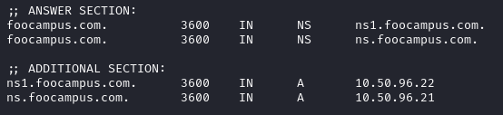
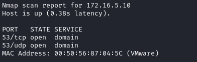
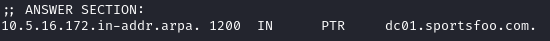
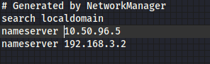

DNS in the Internal Network
Once we have found a DNS inside the Internal
network we can query it to have more info about a domain
Note the use
+cookie because of Microsoft DNS Servers respond to default “dig”
options (see
https://kevinlocke.name/bits/2017/01/20/formerr-from-microsoft-dns-server-for-dig/)
Determine
Ip address of a domain
dig -t ns @10.50.96.5 foocampus.com +nocookie
 like that we have found
the information about the Ip address assigned to the FQDN inside this network of this domain.
to reach it we
need anyway edit /etc/hosts or /etc/resolv.conf as seen in
FQDN
reachabale by querying the internal DNS serverDetermine Domain of an Ip
address If we have found a DNS in the Internal Network
 and we want to determine the domain to which
belongs the DNS and of the other IP address in the network
dig @172.16.5.10 -x 172.16.5.10 +nocookie +short
dig @172.16.5.10 -x 172.16.5.5 +nocookie +short
-x → request for a Reverse DNS lookup
 here we have discovered the domain “sportsfoo.com”
Once
you have found a DNS inside the network add it to one of these files
Edit •
/etc/hosts It map hostnames to IP addresses
Edit this file
when we find an ip address of a machine that have Web Server active
•
/etc/resolv.conf
useful if we needfor example find subdomains of the domain.
 When we find a DNS inside the internal network, we should put its address
in this file, above the others so it is queried first
By placing this entry above the default nameserver our
machine will use this one on the target host first, and then if that fails, use the default nameserver.
By
doing that we could resolve more domain names specific to the target host.
This valid both when we are doing
an Internal Penetration test and an external one on the WebApp.